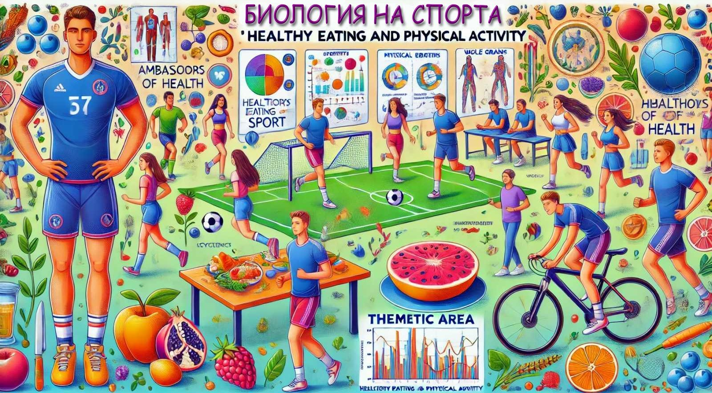
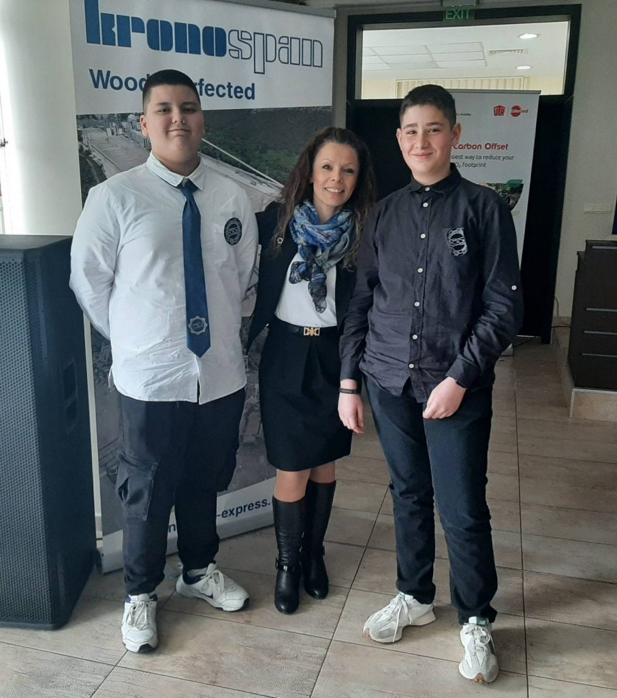
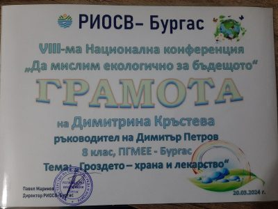
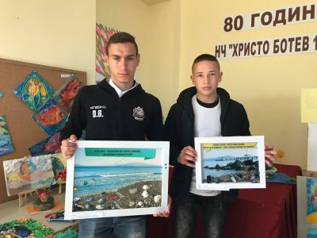

Ученическа конференция в гр. Котел по случай „150 години от смъртта на Георги Стойков Раковски“.
Учениците от ПГМЕЕ: Стоян Маджаров, Мирослав Желев и Атанас Янакиев представиха достойно своето училище чрез своите есета.
Стоян Маджаров получи грамота за най-добро историческо есе.
Ръководител: Светозар Люцканов


Участие в конкурс за най-добра мултимедийна презентация на тема „Будителите на моя роден край“. Конкурсът се организира от евродепутата от ЕНП -Асим Адемов, съвместно с РУО. Трима ученика взеха участие, като Гергана Димитрова от 12 ж получи грамота и поощрителна награда и бе избрана непосредствено преди победителката. Участие взеха и Дилян Папанчев от 12з и Патрик Петков от 12д клас ,които получиха сертификати за участие.


19.11-20.11.2021г година ПГМЕЕ – гр. Бургас взе участие в Пети национален ученически конкурс за историческа памет „Будител“ и в Национална ученическа конференция „200 години от рождението на Георги С. Раковски“ „…Мисъл и желязо, лира и тръба“ под патронажа на кмета на община Варна господин Иван Портних. От общо 250 участници от цялата страна, ученикът Христо Минчев от 10 „ а“ клас успя да се класира сред 8-те най-добри в категория „ЕСЕ“ и бе удостоен с грамота .Той показа изследователски умения , вникване в дълбочината на материята и добра аргументация , за да пресъздаде през своя поглед образа на великия Георги Раковски-идеологът на българското националноосвободително движение. Ръководител на ученика е г-н Светозар Люцканов - учител по история и цивилизации в гимназията.
В периода 05.02-06.02.2023 ПГМЕЕ – гр. Бургас взе участие в Национална ученическа конференция, организирана от СУ "Георги Раковски" гр. Котел и РУО Сливен, по случай 150 години от смъртта на Васил Левски . Темата бе “Васил Левски-вулкан от човечност“ Нашата гимназия бе представена от 10 ученика, които изготвиха видео клипове свързани с Апостола на свободата.
Специалната награда на журито бе спечелена от Стоян Стоянов от 11 "а" клас, който написа поема в чест на Васил Левски.


13.03.2024 Участие на ПГМЕЕ в Националния ученически конкурс "Наследник съм на...", организиран от Министерство на отбраната, Централно военно окръжие и Съюзът на ветераните от войните на България. Калоян Колев от 11 И клас заслужи второ място.


Участие в областен кръг на Олимпиада по История и цивилизация 2020г. - Стоян Стоянов 10 з клас
Участие на областен кръг на Олимпиада по История и цивилизация 2024г. - Христо Ненов
Участие в изложба по повод: “110 год. от Балканските войни”- 10 кл./ 2023г.

Национален конкурс „Мадарски конник - Символ на историческото минало и европейското бъдеще на България“- II място Юлиан Киров 10з клас.


Николай Колев 9 б клас - Първо място на VIII Национална ученическа конференция „Пространство и време“- ВТУ
Националният ученически конкурс „Посланици на здравето“ се провежда в подкрепа на здравословния начин на живот на младите хора. Целта му е превенция на поведенчески и рискови за здравето фактори, свързани с нездравословното хранене, ниската физическа активност, употребата на алкохол и тютюнопушенето.
В рамките на програмата „Черноморски хоризонти“ по повод Европейския ден на морето, бе организиран фотоконкурс „Рибари“. Учениците на Механото участваха активно, като изпратиха свои фотографии и се класираха във конкурса:
⎯ I-во място - Стилиян Кралев – 9-а клас, ПГМЕЕ-Бургас, за фотографията „Петима рибари...“
⎯ II-ро място – Яни Бързев – 9-е клас, ПГМЕЕ-Бургас, за фотографията „В очакване на улова!“
⎯ С грамота за участие беше отличен и Цоньо Цонев – 9-е клас, ПГМЕЕ-Бургас, за фотографията „Мерметосване“. Момчетата бяха наградени и с великолепни, луксозни издания на книги на морска тематика и други предметни награди.
Чрез тази общност, ПГМЕЕ има достъп до ресурси и дейности от потенциални партньори в платформата EU4Ocean. Приемането на Механото за пълноправен член на тази общност е признание за проекта „Старите рибари разказват…“. В общността има над 400 образователни институции от цяла Европа. Мрежата от европейски сини училища е инициатива на Европейската комисия, подкрепена от DG MARE и е разработена от партньорите на коалицията EU4Ocean. В нея членуват училища, които разработват проекти, свързани с моретата и океаните на Европа.
Учениците Димитър Петров и Божидар Славов от 8. клас подготвиха тематични презентации, които споделиха пред участниците в конференцията, и разкриха с интересен и научно обоснован подход своите знания в областта на екологията. Специалната награда на РИОСВ – гр. Бургас спечели Димитър Петров с научната тема: „Гроздето – храна и лекарство“ а единственият награден учител бе госпожа Димитрина Кръстева – ръководител на двамата ученици. Тази награда е признание за усилията и отношението на учениците към научната сфера, както и за значимостта на екологичните въпроси, които ги вълнуват.
 По идея и с активната работа на г-жа Катя Николова – учител по БЗО в нашето училище, Механото изпрати проектно предложение за участие в конкурса. Името на нашия проект бе „Справяме се заедно“. Участници бяха всичките 198 ученици от 8 клас випуск 2021/2022г. На 28 ноември 2022г. бяха обявени резултатите от конкурса - общият брой проекти, които успяха да финализират успешно бяха 27. Нашият проект бе класиран на трето място в трета възрастова група (от 8-ми до 12-ти клас) и получи грамота за „забележително и оригинално изпълнение“. Освен грамоти, премираните училища и екипи получиха и предметни награди, изпратени до директорите на техните училища. Нашите награди бяха къщичка – хранилка за пойни птици и дигитален микроскоп.
Наградата беше връчена лично от Кирил Ананиев – Министър на здравеопазването, на Ивайло Марио Костов и Димитър Иванов – представители на учениците от VIII класове, реализирали проекта с подкрепата на класните ръководители Д.Живкова, Н.Николова, Д.Митев, Р.Славова, Св.Люцканов, Б.Кафалова, Т.Стайкова и Даниела Русева – учител по биология, М.Водев, М.Иванова – учители по ФВС.
Йордан Бахчеванов и Кристиян Георгиев от 9Ж клас, спечелиха Първо място във II-ри РЕГИОНАЛЕН КОНКУРС „Водата и Земята“. Младежите са членове на клуб „Електронна вселена” с ръководител инж. Диана Илиева. Те участваха в 4-та възрастова група (от VIII – XII клас), раздел Приложно творчество с електронни светещи творби със сензори за движение. На 22.04.2019 год. получиха заслужено Първо място с медали и грамоти за упорита си работа. Светещите картини очароваха всички присъстващи в залата за награждаване!
Участието на Даниела Русева /учител по Биология и здравно образование/ в Европейския конкурс за добри практики в областта на образованието, за екологично и устойчиво развитие – на тема “Нашата класна стая за един устойчив свят” /по проект Save World/ донесе на ПГМЕЕ грамота и купа, които бяха връчени на госпожа Желева.!
Във връзка с 22 Април – “Деня на Земята” в оспорван регионален конкурс “Земята е за нас и ние сме за Земята”, организиран от РИОСВ Бургас, в които взеха участие деца и ученици до 12 клас от цялата страна с общо 350 творби, журито определи голямата награда – екскурзия и 1-во място в раздел “Мултимедия” на Никола Попов, Мартин Генчев и Иво Христов от 9з клас на ПГМЕЕ – Бургас с ръководител Даниела Русева.